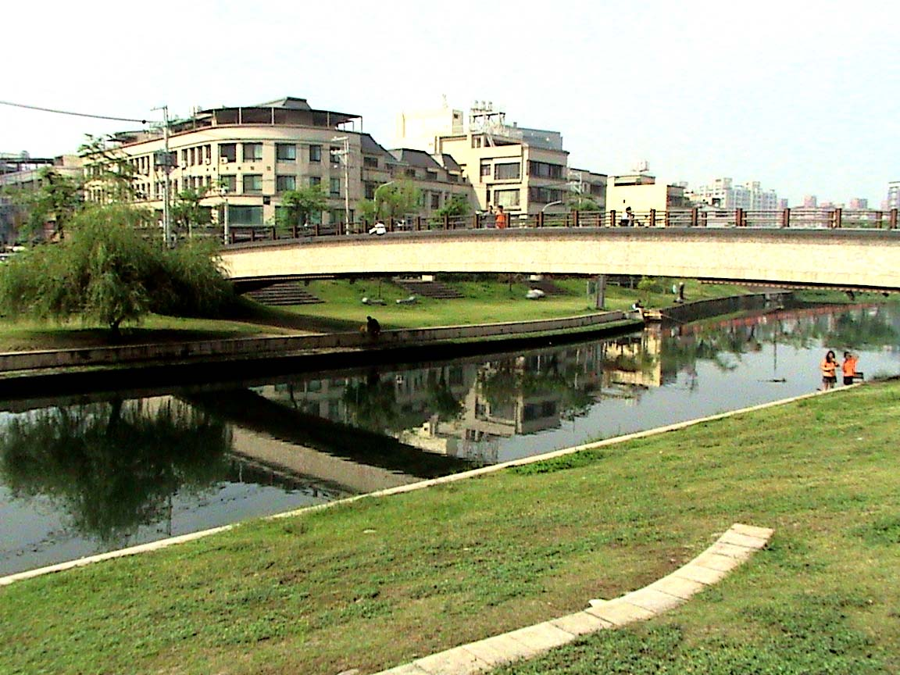

Follow-up
The future plan of Cambridge
Image source: photographed by ourselves Image source: photographed by ourselves
Image source: photographed by ourselves
“Cambridge Project” began in 2014 and was completed in 2015. The park is an extension of the Cambridge project. It successfully improve the environment and water quality. Also, it has become another highlight of the city. It has multiple functions such as flood control, landscaping, and ecological education. Thus, it is now a model drainage control construction in Taiwan.
To expand public participation in high coast adoption work, more local volunteers will get involved in maintaining the cleanness and waste control to the waterfront landscape a pleasant spot.
In addition, the Third River Commission is currently planning to handle the construction of the bridge between the Guangguang Bridge and the Xinxinqiao (about 2200 meters) upstream of the "Kangqiao Project" and the Ciguang Bridge to the Zhongtou Highway Bridge (about 3692 meters ) And other two renovation works, the overall improvement of about 5892 meters in length; At present, the third River Commission will entrust professional manufacturers to handle the design of the environment of Guoguang Bridge to Rixinqiao.
It is estimated that the project will be put into operation in 107 years by the end of 2019. The City council has already invested NT $ 1.66 billion in draining water for Han Stream. In the future, it is estimated that an additional NT $4.93 billion will be allocated for land expropriation and remediation projects. We believe that combining "integrated water management", "hydrophilic riverbanks" and "environmental ecology" , "Landscape modeling" and "leisure and recreation", Han Stream will become a safe, utilitarian, social and educational urban river.
（Sources：provided by the Third Rivers Bureau of the Department of Water Resources,
Ministry of Economic Affairs）